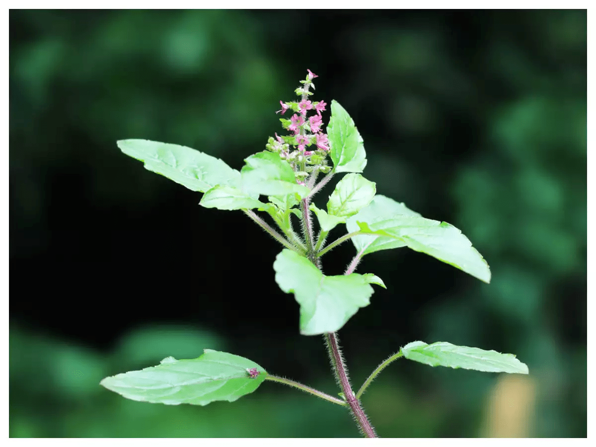

Closely related to culinary basil, tulsi (Ocimum sanctum, a.k.a. holy basil) is a medicinal herb used in Ayurveda that is native to India and Southeast Asia. Tulsi is considered an adaptogenic herb, meaning it can help adapt the body to stress and boost energy.
TULSI